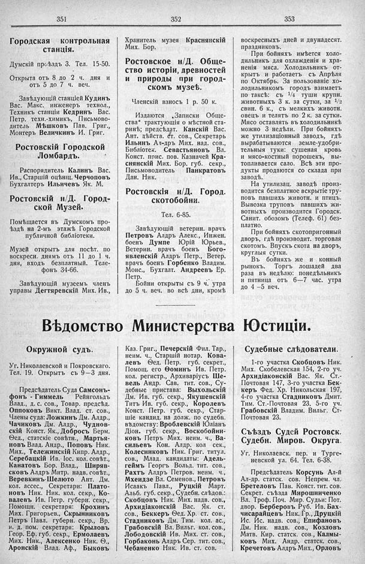

Лист источника 249
Скан

Распознанный текст
351
Городская контрольная
станція.
Думскій проѣздъ 3. Тел. 15-50.
Открыта отъ 8 до 2 ч. дня и
отъ 5 до 7 ч. веч.
Завѣдующій станціей Кудинъ
Вас. Макс. инженеръ технол.,
Техникъ станціи Кедринъ Вас.
Петр. техн.-химикъ, Письмово-
дитель Мѣшковъ Пав. Григ.,
Монтеръ Величкинъ И. Григ.
Ростовскій Городской
Ломбардъ.
Распорядитель Калинъ Вас.
Ив., Старшій оцѣнщ. Черчоповъ
Бухгалтеръ Ильичевъ Як. М.
Ростовскій н/Д. Город-
ской Музей.
Помѣщается въ Думскомъ про-
ѣздѣ на 2-мъ этажѣ Городской
публичной библіотеки.
Музей открытъ для посѣт. по
воскресн. днямъ отъ 11 до 1 ч.
дня, входъ безплатный. Теле-
фонъ 34-66.
Завѣдующій музеемъ членъ
управы Дегтяревскій Мих. Ив.,
352
Хранитель музея Краснянскій
Мих. Бор.
Ростовское н/Д. Обще-
ство исторіи, древностей
и природы при город-
скомъ музеѣ.
Членскій взносъ 1 р. 50 к.
Издаются „Записки Обще-
ства“ трактующія о мѣстной ста-
ринѣ; предсѣдат. Канскій Вас.
Ант. дѣйств. ст. сов., Секретарь
Ильинъ Ал-дръ Мих. над. сов.,
Библіотек. Севастьяновъ Вл.
Конст. прис. пов. Казначей Кра-
снянскій Мих. Бор. губ. секр.,
Письмоводитель Панкратовъ
Дан. Ник.
Ростовскія н/Д. Город.
скотобойни.
Тел. 6-85.
Завѣдующій ветерин. врачъ
Петровъ Алдръ Алекс., Инжен.
боенъ Думпе Юрій Юрьев.,
Ветерин. врачъ боенъ Бого-
явленскій Алдръ Петр., Ветер.
врачъ боенъ Горбенко Владим.
Моис., Бухгалт. Андреевъ Ер.
Петр.
Бойни открыты съ 9 ч. утра
до 5 ч. веч. во всѣ дни, кромѣ
353
воскресныхъ дней и двунадесят.
праздниковъ.
При бойняхъ имѣется холо-
дильникъ для охлажденія и хра-
ненія мяса. Холодильникъ от-
крытъ и работаетъ съ Апрѣля
по Октябрь. За пользованіе хо-
лодильникомъ городъ взимаетъ
по таксѣ: съ 1/4 туши крупн.
животныхъ 3 к. за сутки, за 1/2
свин. 6 к., съ мелкихъ животн.
овецъ и телятъ по 2 к. за сутки.
Мясо оставлять въ холодильникѣ
можно 3 недѣли. При бойняхъ
же утилизаціонный заводъ, гдѣ
вырабатываются земле-удобри-
тельныя туки: сушеная кровь
и мясо-костный порошекъ, вы-
тапливается сало. Всѣ эти про-
дукты продаются со склада при
заводѣ.
На утилизац. заводѣ произ-
водится безплатное вскрытіе тру-
повъ павшихъ животн. и птицъ.
Вывозка труповъ павшихъ жи-
вотныхъ производится Городск.
Санит. обозомъ (Телеф. 61) без-
платно.
При бойняхъ скотопригонный
дворъ, гдѣ производит. торговля
скотомъ. Впускъ скота на дворъ,
круглыя сутки.
Въ бойняхъ же и конный
рынокъ. Торгъ лошадей два
раза въ недѣлю: понедѣльникъ
и пятница отъ 6—7 час. утра
до 4 —5 веч.
Вѣдомство Министерства Юстиціи.
Окружной судъ.
Уг. Николаевской и Покровскаго.
Тел. 19. Открытъ съ 9—3 дня.
Предсѣдатель Суда Самсонъ-
фонъ - Гиммель Рейнгольдъ
Влад., д. с. сов., Товар. предсѣд.
Оппоковъ Викт. Влад. ст. сов.,
Члены суда: Ложкинъ Дм. Алдр.,
Чачиковъ Дм. Алдр., Чуднов-
скій Конст. Як., Добросъ Берм.
Ѳед., статскіе совѣтн., Мартья-
новъ Влад. Андр., Поповъ Ник.
Мих., Тележинскій Кипр. Алдр.,
Серебацкій Ив. Іос. кол. совѣт.,
Канатовъ Бор. Влад., Ширяв-
сковъ Алдръ Митр. надв. совѣт.,
Веревкинъ-Шелюто Ант. Дм.
кол. ассес., Секретари: Плато-
новъ Ник. Ник. кол. секр., Ко-
валевъ Ив. Петр. губерн. секр.,
Помощн. секретаря: Крохинъ
Мих. Григорьев., Скрынниковъ
Петръ Павл. губерн. секр., Вр.
и. д. пом. секретаря: Крыловъ
Геор. Еф. губ. секр., Ермолаевъ
Мих. Ник., Алексенко Ник. Ѳ.,
Аронскій Влад. Аф., Быковъ
Каз. Григ., Печерскій Фил. Тар.,
неим. ч., Старшій нотар. Кова-
левъ Ѳед. Петр. губ. секрет.,
Помощ. его Ѳоминъ Ив. Петр.
кол. регистр., Архиваріусъ Ше-
вель Андр. Сав. тит. сов., Су-
дебные пристава: Выхольскій
Дм. Ив. губ. секр., Якушевскій
Титъ Ив. губ. секр., Королевъ
Конст. Петр. губ. секр., Стар-
шіе кандид. на долж. по судебн.
вѣдомству: Вроблевскій Юліанъ
Діон. губ. секр., Воскобойни-
ковъ Петръ Мих. неим. ч., Ва-
сильевъ Кон. Алдр. кол сек.,
Колесниковъ Ник. Григ. титул.
сов., Млад. кандидаты: Адель-
геймъ Георгъ Вольд. тит. сов.,
Рахтъ Алдръ Петров. неим. ч.,
Мхеидзе Вл. Семенов., Петровъ
Исаакъ Павл., Руцкій Март.
Альб. губ. секр., Судебн. слѣдов.:
Скобцовъ Ник. Мих. надв. сов.,
Архидіаконскій Вас. Як. ст.
сов., Беккеръ Ѳед. Хр. ст. сов.,
Стадниковъ Дм. Тим. кол. ас.,
Грабовскій Вл. Вильг. кол. сов.,
Лободовскій Ив. Мих. ст. сов.,
Горбаконь Алдръ Сер. тит. сов.,
Чебаненко Ник. Ив. ст. сов.
Судебные слѣдователи.
1-го участка Скобцовъ Ник.
Мих. Скобелевская 154, 2-го уч.
Архидіаконскій Вас. Як. Ст.-
Почтовая 147, 3-го участка Бек-
керъ Фед. Хр. Никольская 197,
4-го участка Стадниковъ Дмит.
Тим. Ст.-Почтовая 23, 5-го уч.
Грабовскій Владим. Вильг. Ст-
Почтовая 23.
Съѣздъ Судей Ростовск.
Судебн. Миров. Округа.
Уг. Николаевск. пер. и Турге-
невской ул. 64. Тел. 6-38.
Предсѣдатель Корсунъ Ал-й
Ал-др. статск. сов. Непрем. чл.
Бретеловъ Пав. Конст. тит. сов.
Секрет. съѣзда Мирошниченко
Вл. Троф. Поч. Мир. Судьи: Пот.
двор. Берберовъ Руб. Ив. Бах-
чисарайцевъ Ник. Гр., Друцкій
Ис. Ис. надв. сов., Епифановъ
Дм. Ник. надв. сов., Козловъ
Матв. Кир. статск. сов., Калмы-
ковъ Мих. Андр. статск. сов.,
Кречетовъ Алдръ Мих., Орловъ